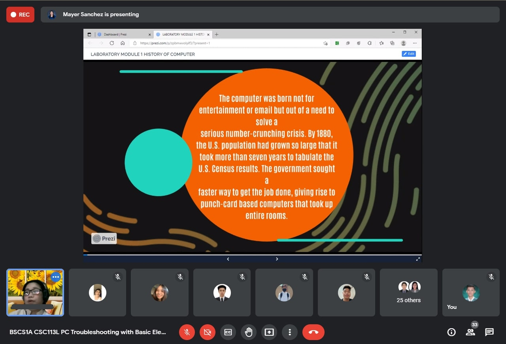
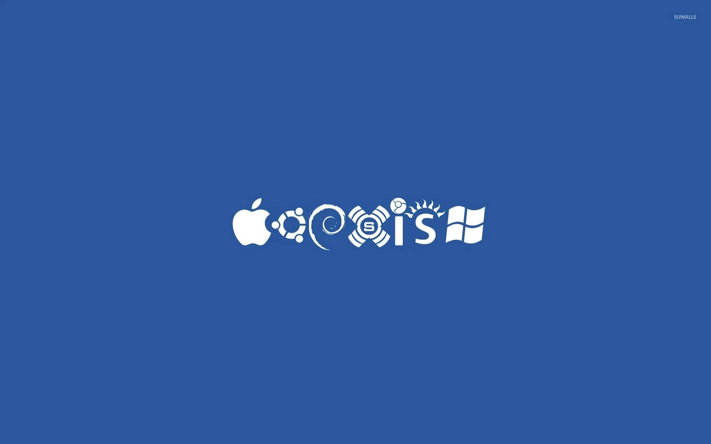

Blog #2
September 3, 2021
Hello everyone, I am back with another blog, this time, it is my second online class in the subject, Pc Troubleshooting with Basic Electronics.

For our online class this time, our professor discussed the continuation of the history of computers. Though, we are getting more into the modern times of computer technology. We learned about the different computers released and made by some companies that we all know. For example, the Apple, IBM, and Microsoft.
Assignment for Module 2
Now I am going to be sharing to you guys one of my assignments that was given to me by my teacher. These questions are mostly about the software of computers, so this should be fun and educational for everyone.

1. What are the Two Categories of Software Licenses?
PROPRIETY LICENSES - this license is where the software publisher grants the use of one or more copies of software under the end-user license agreement (EULA), but the ownership of the very product or software remains as property of the publisher.
FREE AND OPEN SOURCE SOFTWARE LICENSES - the second software license are free, meaning you can use them without any included payment. It has two sub-categories. The first one is the Permissive Licenses, this type has minimal requirements when you use their software. The second is Copy Left Licenses, it aims to preserve the freedom that are given to the users by ensuring that all subsequent users receives those rights.
2.What is Installer?
When we are using our computer, we often need programs and applications that can help us do the tasks. When those apps are missing or not installed in our computer. We would usually download and find it in the internet. Installers are the executable files that we download on the internet. We open it to start our installation of the application. The size of the installer may vary depending on the program that we need. and usually after installation, we would be deleting the installer because we don't need it any further. There are some installers that come with bundles or package with multiple programs included in one pack.
3.What are the types of Installation?
Attended Installation - The most common form of installation. Installation process usually needs a user who attends it to make choices, such as accepting or declining an end-user license agreement (EULA).
Silent Installation - Installation that does not display messages or windows during its progress hence the name silent. In some cases, installers with viruses in it are installed this way because the hacker doesn't want the user to know that a malware is being installed.
Un-attended Installation - Performed without user interaction during its progress or with no user present at all. One of the reasons to use this approach is to automate the installation of many systems. Examples of this type of installation are the windows update which are automatically done by the system.
Headless Installation - Performed without using a computer monitor connected. It is an installation capable of working on a device without a graphical user interface.
Scheduled or Automated Installation - Runs on a preset time or when a predefined condition transpires, as opposed to an installation process that starts explicitly on a user's command. Same example would be the system update of Windows in where you can schedule the installation of the update.
Clean Installation - Interfering elements such as old versions of the computer program being installed or leftovers from a previous installation. It is the process of not using the old version and instead creating a fresh and new with no remaining information or files on the disk or program.
Network Installation - Installation of a program from a shared network resource. It is the program that is intended to be installed inside a network.
4.What is Bootstrapper?
A small executable file which updates the installer and starts the real installation after the update. During the installation of computer programs it is sometimes necessary to update the installer or package manager itself. It is called a small executable file because the file size is around kilobytes or megabytes only.
5.What is mobile operating system?
These are the operating system intended and mainly for mobile devices.
6.What are the types of mobile operating system?
Android - used mostly by smartphones and tablets, it is based on a modified version of the Linux kernel and other open source software. Smartphone
iOS - Created and developed by Apple Inc. It is exclusively used only by Apple brand devices.